7 donateurs
33 Jours Restants
voyons voir | art contemporain et territoire
Marseille
 Les dons donnent droit à une réduction fiscale
Cagnotte officielle
Les dons sont versés directement à voyons voir | art contemporain et territoire
Cette année, notre association propose un projet appelé Découplage qui explore le patrimoine maritime de la région Sud. De Port de Bouc à Marseille en passant par Athènes, l’association voyons voir | art contemporain er territoire, le Centre d’Arts Plastiques F. Léger, le chantier naval Borg et le duo Forlane 6 Studio, proposent, dans le cadre de la programmation paralèlle de la biennale d’art contemporain Manifesta, une sculpture monumentale dans l'espace public. Elle sera exposée dans le bassin du J4 en face du MUCEM durant les mois de juin et juillet 2020.
La structure flottante de Découplage fait écho aux reconstitutions des épaves morcelées des musées archéologiques et souligne l’importance, dans un futur en descente énergétique, de l’histoire artisanale et des techniques préindustrielles. Découplage souligne une question de fond, comment détacher le futur de notre civilisation des énergies fossiles qui l’ont transformée ?